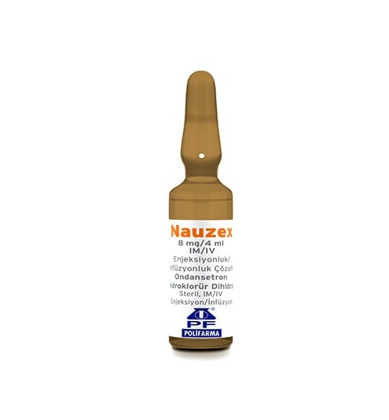

Nauzex 8 mg/4 ml IM/IV Enjeksiyonluk/İnfüzyonluk Çözelti

Ne için kullanılır
KT · Bölüm 1NAUZEX ondansetron etkin maddesini içerir. Enjeksiyon veya infüzyon için şeffaf, renksiz, steril çözelti içeren bir ampullük ambalajlar halindedir.
NAUZEX anti-emetik olarak adlandırılan bir ilaç grubuna dahildir. Bazı ilaç tedavileri (örn; kanser ilaçları) kendinizi hasta hissetmenize ve kusmanıza neden olabilir. NAUZEX kendinizi hasta hissetmenizi veya kusmanızı önler. NAUZEX, ilaç ve ışınla yapılan kanser tedavilerine bağlı bulantı ve kusmayı önlemek için kullanılır. Ayrıca, ameliyatlardan sonra ortaya çıkan bulantı ve kusmaları önlemek için de kullanılır.
Doktorunuz size ve sizin koşullarınıza uygun olarak bu ilacı seçmiştir.
NAUZEX, tedavi sonrası kendinizi hasta hissetmemeniz ve kusmanızı önlemek için verilmiştir.
Bu ilacı kullanmaya başlamadan önce bu KULLANMA TALİMATINI dikkatlice okuyunuz, çünkü sizin için önemli bilgiler içermektedir. • Bu kullanma talimatını saklayınız. Daha sonra tekrar okumaya ihtiyaç duyabilirsiniz. • Eğer ilave sorularınız olursa, lütfen doktorunuza veya eczacınıza danışınız. • Bu ilaç kişisel olarak sizin için reçete edilmiştir, başkalarına vermeyiniz. • Bu ilacın kullanımı sırasında, doktora veya hastaneye gittiğinizde doktorunuza bu ilacı kullandığınızı söyleyiniz. • Bu talimatta yazılanlara aynen uyunuz. İlaç hakkında size önerilen dozun dışında yüksek veya düşük doz kullanmayınız.